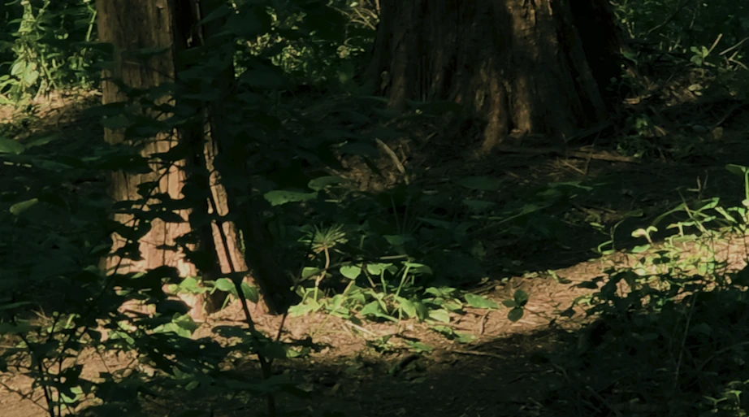

ABOUT FEELD
우리는 화면 속 숲보다, 실제로 걸었던 숲을 전하고 싶었습니다.
이미지로 만든 숲은 점점 실제 풍경과 구분하기 어려워지고 있습니다.
FEELD는 직접 걸은 숲길을 촬영하고, 그곳의 소리를 기록하는 일에서 시작했습니다.
화면에 다 담기지 않는 이끼와 나무껍질의 감촉은, 관객의 손으로 이어집니다.

Capturing nature, Connecting the senses
자연을 담고, 감각을 잇다
Feel the Field
FEELD는 우리가 직접 걸어 기록한 숲을 관객의 손끝에서
다시 경험하도록 만든 인터랙티브 미디어아트입니다.

ABOUT FEELD
이미지로 만든 숲은 점점 실제 풍경과 구분하기 어려워지고 있습니다.
FEELD는 직접 걸은 숲길을 촬영하고, 그곳의 소리를 기록하는 일에서 시작했습니다.
화면에 다 담기지 않는 이끼와 나무껍질의 감촉은, 관객의 손으로 이어집니다.
OUR FOREST
안산 메타세쿼이아 숲길은 도심에서 멀지 않지만,
한 걸음만 들어서면 소리와 공기가 달라집니다.
누구나 걸어갈 수 있는 거리에 있는 숲이라는 점이
우리가 이 숲을 고른 첫 번째 이유였습니다.
하늘로 곧게 뻗은 메타세쿼이아가 일정한 간격으로 서 있어,
걷는 동안 나무 사이로 빛과 그림자가 규칙적으로 지나갑니다.
이 리듬은 360도 촬영과
가우시안 스플랫으로 공간을 옮기기에 잘 맞았습니다.
오후가 되면 잎 사이로 낮은 빛이 스며들어
숲의 색이 가장 선명해집니다.
우리는 이 시간대에 맞춰 여러 번 숲을 찾았고,
그 빛을 그대로 기록하려 했습니다.
발밑에는 이끼와 고사리, 쓰러진 나무가 가득합니다.
화면으로는 다 전할 수 없는 이 감촉을
체험대 위 자연물로 옮겨,
관객이 직접 손으로 만질 수 있게 했습니다.
숲길을 따라 걸으며 영상과 소리를 기록했습니다.
그렇게 모은 숲은 입자가 되어 전시장에 다시 펼쳐지고,
관객의 손끝에서
처음 우리가 걸었던 그 숲으로 돌아옵니다.

MAKING PROCESS
선 위의 점을 눌러 제작 과정을 확인해보세요.
1. WALK
직접 걸을 숲을 찾아 안산 메타세쿼이아 숲길 답사
PROCESS


팀원들과 안산 메타세쿼이아 숲길 답사
스크롤하여 제작 과정을 둘러보세요
마우스를 클릭한 채로 기다려 보세요
흩어진 빛이 모여 숲이 깨어납니다 · 클릭한 채로 움직이면 숲이 일렁입니다
EXPERIENCE
숲에서 직접 녹음한 바람과 새소리가 손의 움직임을 따라 커지고 잦아듭니다.
정면의 미디어월과 양옆을 감싼 커튼이 숲의 빛을 머금어, 방 전체가 하나의 숲이 됩니다.
눈으로만 보는 숲이 아니라, 손과 귀와 몸으로 머무는 숲입니다.
EXHIBITION SPACE
커튼을 열고 숲으로 들어가요. 나가는 길도 이곳이에요.
단 위 테이블에서 기록한 숲을 담은 엽서와 굿즈를 보고, 모니터로 FEELD 웹사이트를 둘러보며 나만의 엽서를 만들어요.
계단석에 앉아 메이킹 필름을 관람하며, 숲을 걷고 기록해 FEELD를 만들기까지의 과정을 살펴봐요.
미디어월 앞 체험대에 손을 얹으면, 손을 따라 숲이 깨어나요.
Team.
연년생처럼 끊임없이 이어진 팀입니다.
각자의 작업을 이어 전시를 만듭니다.
손끝에 남은 숲의 감촉이, 오래 머물기를.